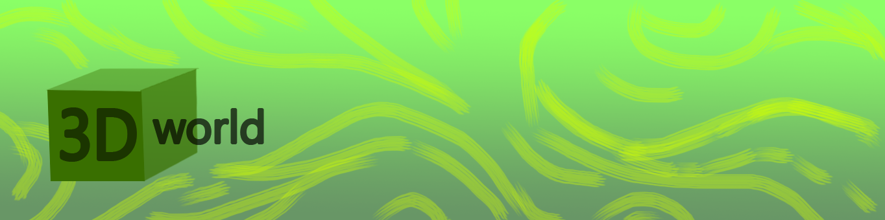
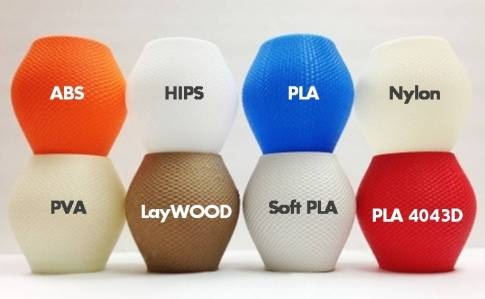
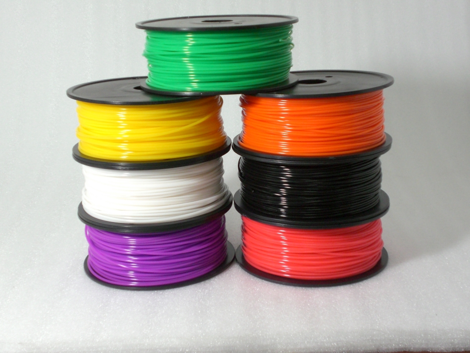

Pääsivu
Materiaalit
Printterit
Linkit ja media
Muovit
Nylon, or Polyamide, is commonly used in powder form with the sintering process or in filament form with the FDM process. It is a strong, flexible and durable plastic material that has proved reliable for 3D printing. It is naturally white in colour but it can be coloured — pre- or post printing. This material can also be combined (in powder format) with powdered aluminium to produce another common 3D printing material for sintering — Alumide. ABS is another common plastic used for 3D printing, and is widely used on the entry-level FDM 3D printers in filament form. It is a particularly strong plastic and comes in a wide range of colours. ABS can be bought in filament form from a number of non-propreitary sources, which is another reason why it is so popular. PLA is a bio-degradable plastic material that has gained traction with 3D printing for this very reason. It can be utilized in resin format for DLP/SL processes as well as in filament form for the FDM process. It is offered in a variety of colours, including transparent, which has proven to be a useful option for some applications of 3D printing. However it is not as durable or as flexible as ABS. LayWood is a specially developed 3D printing material for entry-level extrusion 3D printers. It comes in filament form and is a wood/polymer composite (also referred to as WPC).


© 2016 Markus Silvola. Kaikki oikeudet on pidätetty ja viety putkaan.